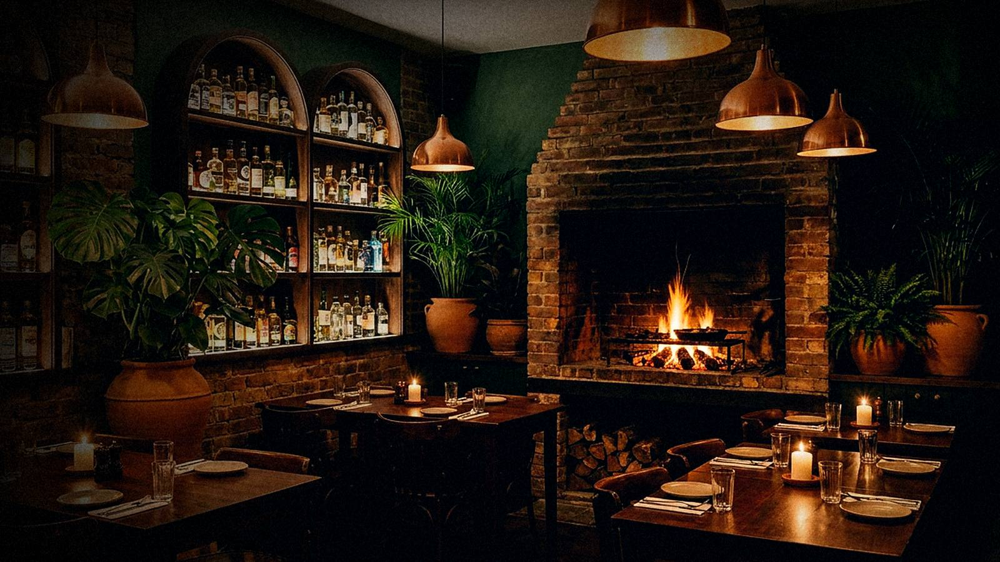
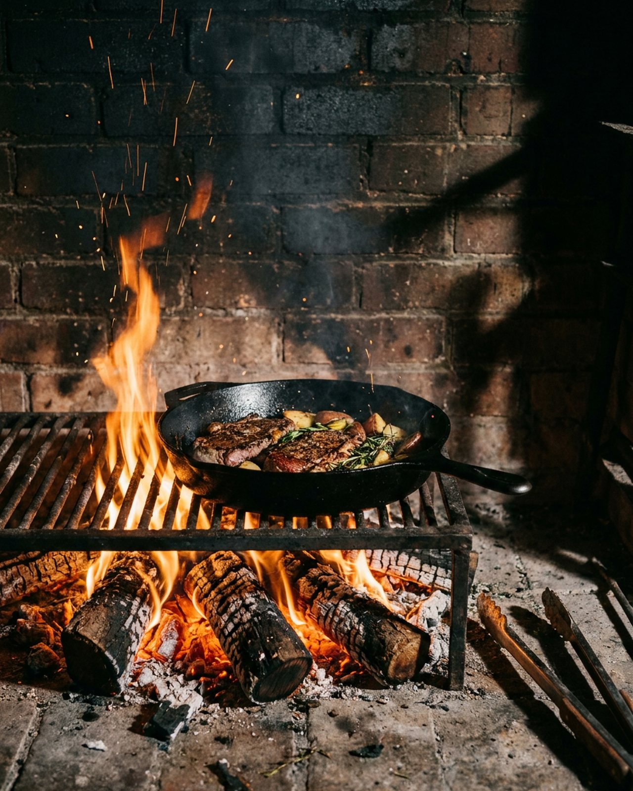

Cozinha brasileira contemporânea · Vila Madalena
Fogo lento,
tempero de casa.
Cortes na brasa, ingredientes de pequenos produtores e uma carta de cachaças pensada para a mesa. Doze anos cozinhando sem pressa.
- 4,92.300 avaliações
- Brasalenha de reflorestamento
- 100%produtores brasileiros

Nossa história
Uma cozinha que começou
em volta da brasa.
O Brasa & Sal nasceu num quintal, de almoços de domingo em que a churrasqueira era o centro da casa. Em 2014 viramos restaurante, mas a ideia continua a mesma: comida brasileira honesta, feita no tempo do fogo.
Trabalhamos com pequenos produtores do interior, fermentamos nossos próprios molhos e mudamos parte do cardápio a cada estação. O resto é paciência — e sal na medida.
- anos de casa
- 12
- pratos na carta
- 48
- nota média · 2.300 avaliações
- 4,9/5
Cardápio
Da brasa para a mesa
Os preços já incluem os acompanhamentos indicados. Pergunte ao garçom sobre o prato do dia.
-
Pastel de costela
R$ 38,00Massa fina, costela desfiada de 12 horas e molho de pimenta-de-cheiro.
-
Bolinho de mandioca
R$ 34,00Recheado com queijo da Canastra, servido com geleia de pimenta.
-
Ceviche de caju e peixe branco
R$ 46,00Leite de tigre com tucupi, caju fresco, cebola roxa e coentro.
-
Abóbora na brasa
R$ 36,00Cabotiá assada na lenha, coalhada seca, mel de cacau e castanha-do-pará.
-
Pão de queijo de frigideira
R$ 28,00Crocante por fora, cremoso por dentro, com manteiga de garrafa.
-
Polvo ao vinagrete
R$ 52,00Polvo tostado, vinagrete de feijão-manteiguinha e azeite de urucum.
-
Picanha na brasa
R$ 128,00400 g, farofa de manteiga de garrafa, cebolinha tostada e vinagrete. Serve 2.
-
Costela 12 horas
R$ 118,00Costela bovina defumada na lenha, purê de mandioquinha e couve crocante.
-
Moqueca de banana-da-terra
R$ 86,00Palmito pupunha, leite de coco, dendê suave e arroz de coentro.
-
Peixe na folha de bananeira
R$ 112,00Peixe do dia assado na brasa, pirão e legumes da estação.
-
Arroz de pato com tucupi
R$ 98,00Pato confitado, jambu, tucupi reduzido e farinha d'água.
-
Nhoque de mandioca
R$ 79,00Cogumelos na manteiga noisette, queijo serrano e sálvia.
-
Torta de chocolate e cupuaçu
R$ 38,00Chocolate 70% de Ilhéus, creme de cupuaçu e sorvete de doce de leite.
-
Pudim de tapioca
R$ 29,00Com calda de café coado e raspas de coco queimado.
-
Queijo coalho na brasa
R$ 32,00Melaço de cana, castanha de caju e flor de sal.
-
Sorvete de doce de leite
R$ 30,00Feito na casa, com crumble de castanha e calda de caramelo salgado.
-
Banana caramelizada
R$ 34,00Banana-ouro na brasa, creme de cumaru e farofa doce de amendoim.
-
Caipirinha da casa
R$ 36,00Cachaça envelhecida em amburana, maracujá, limão-cravo e hortelã.
-
Rabo de galo
R$ 38,00Cachaça prata, vermute tinto e bitter de casca de laranja.
-
Spritz de caju
R$ 34,00Espumante brasileiro, cajuína e aperitivo de ervas.
-
Gim-tônica de jambu
R$ 42,00Gim nacional infusionado com jambu — sim, ele faz a boca tremer.
-
Soda de hibisco
R$ 18,00Sem álcool: hibisco, gengibre fresco e limão.
Nenhum item desta seção atende aos filtros escolhidos.
do chef vegetariano sem glúten
Galeria
Uma noite no Brasa
Clique em uma imagem para ampliar. Use as setas do teclado para navegar.
Depoimentos
Quem sentou, voltou
-
“A picanha chegou exatamente no ponto que pedi e a farofa de manteiga de garrafa merece um capítulo à parte. Atendimento atento sem ser invasivo.”
Marina CoutinhoAniversário de casamento
-
“Fui pela costela e saí falando da moqueca de banana-da-terra. Opções vegetarianas de verdade, não só acompanhamento.”
Rafael TavaresJantar com amigos
-
“Reservei pelo site em dois minutos e a mesa estava pronta na hora marcada. A caipirinha de amburana é perigosa de tão boa.”
Juliana AmaralHappy hour da equipe
-
“Ambiente lindo, luz baixa e música no volume certo. Sábado fica cheio, então vale chegar no horário da reserva.”
Paulo SiqueiraPrimeira visita
-
“Levei meus pais, que são exigentes com comida mineira. O pão de queijo de frigideira foi aprovado com louvor.”
Beatriz LimaAlmoço de domingo
Reservas
Guardamos uma mesa perto do fogo.
Reservas para até 12 pessoas. Para grupos maiores ou eventos fechados, fale com a gente pelo WhatsApp.
- Tolerância de 15 minutos
- Confirmação imediata pelo WhatsApp
- Avise sobre restrições alimentares
Mesa reservada!
Enviamos a confirmação para o seu WhatsApp. Até breve.
Como chegar
Na esquina da praça.
Rua das Figueiras, 214 — Vila Madalena
São Paulo · SP · 05400-000
| Terça a quinta | 12h–15h · 19h–23h |
|---|---|
| Sexta e sábado | 12h–16h · 19h–0h |
| Domingo | 12h–17h |
| Segunda | Fechado |